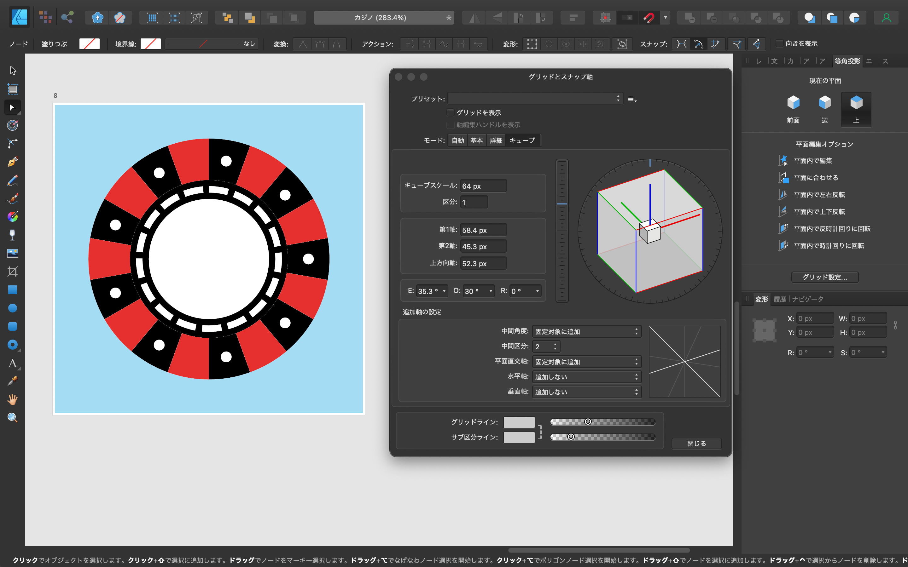
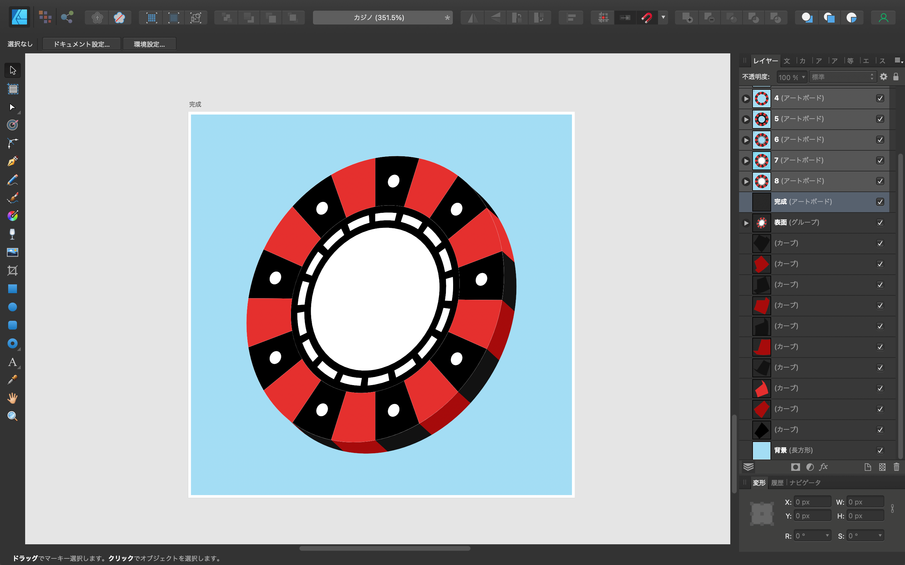

<!DOCTYPE html>
<html lang="ja"><head>
  <meta charset="utf-8">
  <title>R.kobayashi | portfolio</title>

  <!-- mobile responsive meta -->
  <meta name="viewport" content="width=device-width, initial-scale=1, maximum-scale=1">
  <meta name="description" content="this is meta description">
  <meta name="author" content="R.kobayashi">
  <meta name="generator" content="Hugo 0.83.1" />

  <!-- plugins -->
  
  <link rel="stylesheet" href="https://Ryotakobayash.github.io/blog/plugins/bootstrap/bootstrap.min.css ">
  
  <link rel="stylesheet" href="https://Ryotakobayash.github.io/blog/plugins/slick/slick.css ">
  
  <link rel="stylesheet" href="https://Ryotakobayash.github.io/blog/plugins/themify-icons/themify-icons.css ">
  
  <link rel="stylesheet" href="https://Ryotakobayash.github.io/blog/plugins/venobox/venobox.css ">
  

  <!-- Main Stylesheet -->
  
  <link rel="stylesheet" href="https://Ryotakobayash.github.io/blog/scss/style.min.css" media="screen">

  <!--Favicon-->
  <link rel="shortcut icon" href="https://Ryotakobayash.github.io/blog/images/favicon.png " type="image/x-icon">
  <link rel="icon" href="https://Ryotakobayash.github.io/blog/images/favicon.png " type="image/x-icon">

  

  <meta property="og:title" content="Affinity Designerで立体的なカジノコインを作る" />
<meta property="og:description" content="this is meta description" />
<meta property="og:type" content="article" />
<meta property="og:url" content="https://Ryotakobayash.github.io/blog/blog/20210715/" /><meta property="article:section" content="blog" />
<meta property="article:published_time" content="2021-07-15T19:02:57&#43;09:00" />
<meta property="article:modified_time" content="2021-07-15T19:02:57&#43;09:00" />


  <meta name="twitter:card" content="summary"/>
<meta name="twitter:title" content="Affinity Designerで立体的なカジノコインを作る"/>
<meta name="twitter:description" content="this is meta description"/>


  <!-- google analitycs -->
  <script>
    (function (i, s, o, g, r, a, m) {
      i['GoogleAnalyticsObject'] = r;
      i[r] = i[r] || function () {
        (i[r].q = i[r].q || []).push(arguments)
      }, i[r].l = 1 * new Date();
      a = s.createElement(o),
        m = s.getElementsByTagName(o)[0];
      a.async = 1;
      a.src = g;
      m.parentNode.insertBefore(a, m)
    })(window, document, 'script', '//www.google-analytics.com/analytics.js', 'ga');
    ga('create', 'Your ID', 'auto');
    ga('send', 'pageview');
  </script>

  
  <script async src="https://www.googletagmanager.com/gtag/js?id=G-4521MTZVG1"></script>
  <script>
    window.dataLayer = window.dataLayer || [];
    function gtag(){dataLayer.push(arguments);}
    gtag('js', new Date());
    gtag('config', 'G-4521MTZVG1');
  </script>

</head>
<body>
<!-- preloader start -->
<div class="preloader">
  
</div>
<!-- preloader end -->
<!-- navigation -->
<header class="navigation">
  <div class="container">
    
    <nav class="navbar navbar-expand-lg navbar-white bg-transparent border-bottom pl-0">
      <a class="navbar-brand mobile-view" href="https://Ryotakobayash.github.io/blog"></a>
      <button class="navbar-toggler border-0" type="button" data-toggle="collapse" data-target="#navigation">
        <i class="ti-menu h3"></i>
      </button>

      <div class="collapse navbar-collapse text-center" id="navigation">
        <div class="desktop-view">
          <ul class="navbar-nav mr-auto">
            
            <li class="nav-item">
              <a class="nav-link" href="https://twitter.com/Re00871489"><i class="ti-twitter-alt"></i></a>
            </li>
            
            <li class="nav-item">
              <a class="nav-link" href="https://www.instagram.com/ry6ou3ta0/?hl=ja"><i class="ti-instagram"></i></a>
            </li>
            
            <li class="nav-item">
              <a class="nav-link" href="https://github.com/Ryotakobayash?tab=repositories"><i class="ti-github"></i></a>
            </li>
            
          </ul>
        </div>

        <a class="navbar-brand mx-auto desktop-view" href="https://Ryotakobayash.github.io/blog"></a>

        <ul class="navbar-nav">
          
          
          <li class="nav-item">
            <a class="nav-link" href="https://Ryotakobayash.github.io/blog/about">About</a>
          </li>
          
          
          
          <li class="nav-item">
            <a class="nav-link" href="https://Ryotakobayash.github.io/blog/blog">Post</a>
          </li>
          
          
        </ul>

        
        <!-- search -->
        <div class="search pl-lg-4">
          <button id="searchOpen" class="search-btn"><i class="ti-search"></i></button>
          <div class="search-wrapper">
            <form action="https://Ryotakobayash.github.io/blog/search" class="h-100">
              <input class="search-box px-4" id="search-query" name="s" type="search" placeholder="Type & Hit Enter...">
            </form>
            <button id="searchClose" class="search-close"><i class="ti-close text-dark"></i></button>
          </div>
        </div>
        

        
      </div>
    </nav>
  </div>
</header>
<!-- /navigation -->

<section class="section-sm">
  <div class="container">
    <div class="row">
      <div class="col-lg-8 mx-auto">
        
        <a href="https://Ryotakobayash.github.io/blog/categories/private"
          class="text-primary">Private</a>
        
        <h2>Affinity Designerで立体的なカジノコインを作る</h2>
        <div class="mb-3 post-meta">
          <span>By R.kobayashi</span>
          
          <span class="border-bottom border-primary px-2 mx-1"></span>
          <span>15 July 2021</span>
          
        </div>
        
        
        
        <div class="content mb-5">
          <p>Affinity Designerのグリッド機能を使って立体的なカジノコインを作ります．ここではmac版のキーボード操作で説明していますが<code>command</code>を<code>Ctrl</code>にすることでWindowsの方にも参考のしていただけるかと思います．</p>
<h5 id="今回の作成環境">今回の作成環境</h5>
<ul>
<li>mac</li>
<li>AFFINITY Designer ver1.9.1</li>
</ul>
<!-- raw HTML omitted -->
<h5 id="目次">目次</h5>
<ul>
<li>2Dカジノコインの作成</li>
</ul>
<ol>
<li><a href="#1-%E3%82%AB%E3%82%B8%E3%83%8E%E3%82%B3%E3%82%A4%E3%83%B3%E5%A4%96%E5%91%A8%E3%81%AE%E6%A8%A1%E6%A7%98%E4%BD%9C%E6%88%901">2Dカジノコイン外周</a></li>
<li><a href="#5-%E3%82%AB%E3%82%B8%E3%83%8E%E3%82%B3%E3%82%A4%E3%83%B3%E5%86%85%E5%91%A8%E3%81%AE%E6%A8%A1%E6%A7%98%E4%BD%9C%E6%88%901">2Dカジノコイン内周</a></li>
<li><a href="#7-%E3%82%AB%E3%82%B8%E3%83%8E%E3%82%B3%E3%82%A4%E3%83%B3%E4%B8%AD%E5%BF%83%E9%83%A8%E3%81%AE%E4%BD%9C%E6%88%90">2Dカジノコイン中心部</a></li>
</ol>
<ul>
<li>立体的に加工</li>
</ul>
<ol>
<li><a href="#1-%E3%82%B0%E3%83%AA%E3%83%83%E3%83%88%E7%B7%9A%E3%81%AE%E8%A1%A8%E7%A4%BA%E3%81%A8%E8%AA%BF%E6%95%B4">グリッド線の表示と調整</a></li>
<li><a href="#2-%E8%A7%92%E5%BA%A6%E3%82%92%E3%81%A4%E3%81%91%E3%82%8B">角度をつける</a></li>
<li><a href="#3-%E5%8E%9A%E3%81%95%E3%81%AE%E8%AA%BF%E6%95%B4">厚さの調整</a></li>
<li><a href="#4-%E5%81%B4%E9%9D%A2%E3%81%AE%E4%BD%9C%E6%88%901">側面の作成</a></li>
<li><a href="#6-%E5%AE%8C%E6%88%90">完成</a></li>
</ol>
<!-- raw HTML omitted -->
<h3 id="1-2dカジノコインの作成">1. 2Dカジノコインの作成</h3>
<h4 id="1-カジノコイン外周の模様作成1">(1) カジノコイン外周の模様作成1</h4>
<p>
ツールバーの[扇型ツール]で扇型を作成 &gt; <a href="https://affinity.help/photo/ja.lproj/index.html?page=pages/Workspace/contextBar.html?title=%E3%82%B3%E3%83%B3%E3%83%86%E3%82%AD%E3%82%B9%E3%83%88%E3%83%84%E3%83%BC%E3%83%AB%E3%83%90%E3%83%BC">コンテキストツールバー</a>で[合計角度],[穴の半径]に任意の値を設定</p>
<!-- raw HTML omitted -->
<p>画像の場合では[合計角度:20度],[穴の半径:66%]で作りました．</p>
<!-- raw HTML omitted -->
<h4 id="2-カジノコイン外周の模様作成2">(2) カジノコイン外周の模様作成2</h4>
<p>
出力の都合で継ぎ目のないドーナツ型に見えますが(1)で作った扇型が繋がってそう見えています．</p>
<!-- raw HTML omitted -->
<p><code>command + ドラッグ</code>を使って(1)で作成したオブジェクトを同じ場所に複製 &gt; <a href="https://affinity.help/designer/ja.lproj/index.html?page=pages/Panels/transformPanel.html?title=%E5%A4%89%E6%8F%9B%E3%83%91%E3%83%8D%E3%83%AB">変形パネル</a>で図形の中心を回転中心にして[R]の値に(1)で設定した[合計角度]と同じ値を入力 &gt; <code>command + j</code>で円ができるまで複製を繰り返す</p>
<!-- raw HTML omitted -->
<h4 id="3-カジノコイン外周の模様作成3">(3) カジノコイン外周の模様作成3</h4>
<p>
(2)で作成した複数のオブジェクトを間を開けて選択，グループ化して任意の色に変更 &gt; 円の中心を基準に<a href="https://affinity.help/designer/ja.lproj/index.html?page=pages/Panels/transformPanel.html?title=%E5%A4%89%E6%8F%9B%E3%83%91%E3%83%8D%E3%83%AB">整列</a>など行う場合にそなえて，2色をまとめてグループ化</p>
<!-- raw HTML omitted -->
<p>｀__※色ごとにグループ化するとグループの中心が円の中心と異なった位置になるため注意が必要です．__</p>
<h4 id="4-カジノコイン外周の模様作成4">(4) カジノコイン外周の模様作成4</h4>
<p>
ツールバーの[楕円ツール]で白い円を外周上に作成 &gt; (3)で作成した外周の中心点を挟んで反対側にも同様に円を配置 &gt; <a href="https://affinity.help/designer/ja.lproj/index.html?page=pages/Panels/transformPanel.html?title=%E5%A4%89%E6%8F%9B%E3%83%91%E3%83%8D%E3%83%AB">整列</a>で位置を調整 &gt; (2)で扇型を複製して円を作った要領で小さい円を複製し，不要な円を削除　</p>
<!-- raw HTML omitted -->
<h4 id="5-カジノコイン内周の模様作成1">(5) カジノコイン内周の模様作成1</h4>
<p>
これまでに作ってきた円の内側に接するように[ドーナッツ型ツール]でオブジェクトを作成</p>
<!-- raw HTML omitted -->
<h4 id="6-カジノコイン内周の模様作成2">(6) カジノコイン内周の模様作成2</h4>
<p>
(5)で作成したドーナツ型オブジェクトの上に白い<a href="https://affinity.help/designer/ja.lproj/index.html?page=pages/Panels/transformPanel.html?title=%E5%A4%89%E6%8F%9B%E3%83%91%E3%83%8D%E3%83%AB">破線</a>を作成 &gt; 破線を選択後にメニューバーの[レイヤー]から[境界線を展開]</p>
<!-- raw HTML omitted -->
<h4 id="7-カジノコイン中心部の作成">(7) カジノコイン中心部の作成</h4>
<p>
[楕円ツール]で(5)で設置したオブジェクトより内側に白い円を作成する</p>
<!-- raw HTML omitted -->
<h3 id="2-立体的に加工">2. 立体的に加工</h3>
<h4 id="1-グリット線の表示と調整">(1) グリット線の表示と調整</h4>
<p>
メニューバーの[表示]から，[グリッドを表示]と[グリッド及び軸マネージャー]を選択し，[グリッド軸]と[グリッドとスナップ軸パネル]を表示 &gt; [表示]の[スタジオ]から[等角投影]にチェックを入れ，[等角投影パネル]を表示 &gt;
[グリッドとスナップ軸パネル]でキューブモードを選択</p>
<!-- raw HTML omitted -->
<p>[グリッドとスナップ軸パネル]内の立方体における手前側3つの面のいずれかに合わせるような形でカジノコインを変形するので，立方体を動かして好きなように角度を調整する．</p>
<h4 id="2-角度をつける">(2) 角度をつける</h4>
<p>
カジノコインを選択した状態で，[等角投影パネル]の[現在の平面]で合わせたい平面を選択 &gt; [平面編集オプション]の[平面に合わせる]</p>
<!-- raw HTML omitted -->
<h4 id="3-厚さの調整">(3) 厚さの調整</h4>
<p>
(2)で平面に合わせたカジノコインを<code>command + ドラッグ</code>で厚さ方向に複製する．
<code>Shift</code>も合わせて押すことによって画像のようなガイドが表示される．</p>
<!-- raw HTML omitted -->
<h4 id="4-側面の作成1">(4) 側面の作成1</h4>
<p>
(3)で複製してできた面を「表面」，複製元である面を「裏面」とグループ名を変更した．
ツールバーの[ペンツール]で，カジノコイン外周部の色の境目を図にしめしたように結び，側面となるオブジェクトを作成する．</p>
<!-- raw HTML omitted -->
<h4 id="5-側面の作成2">(5) 側面の作成2</h4>
<p>
一度「表面」を非表示する &gt; (2)で作成したオブジェクトの一つと，それに対応する位置の「裏面」のオブジェクトを同時に選択し，ツールバーの[加算]で合体 &gt; レイヤーを整える</p>
<!-- raw HTML omitted -->
<!-- raw HTML omitted -->
<h4 id="6-完成">(6) 完成</h4>
<p>
非表示にしていた「表面」を表示して完成</p>
<!-- raw HTML omitted -->
<h3 id="まとめ">まとめ</h3>
<p>最後までご覧いただきありがとうございました．
今回は一つの角度のみ作成しましたが，<a href="#2-%E8%A7%92%E5%BA%A6%E3%82%92%E3%81%A4%E3%81%91%E3%82%8B">(2)角度をつける</a>段階を行う際に複数の平面を使用することで何パターンか作成することができます．3パターンほどあれば基本的な回転と拡大・縮小によって自然に増やしていけるので落下するカジノチップなんかも作れるかもしれません．
使い始めたばかりなのでもっと簡単な方法があるかもしれませんがよかったら試してみてください．</p>

        </div>

        
        
      </div>
    </div>
  </div>
</section>


<footer>
  <div class="container">
    <div class="row justify-content-center">
      <div class="col-12 text-center mb-5">
        <a href="https://Ryotakobayash.github.io/blog"></a>
      </div>
               
      <div class="col-lg-3 col-sm-6 mb-5">
        <h6 class="mb-4">Contact Me</h6>
        <ul class="list-unstyled">
          
          
                     
          <li class="mb-3"><a class="text-dark" href="mailto:ryota5683804@gmail.com"><i
                class="ti-email mr-3 text-primary"></i>ryota5683804@gmail.com</a>
          
          </li>
        </ul>
      </div>
      
      <div class="col-lg-3 col-sm-6 mb-5">
        <h6 class="mb-4">Social Contacts</h6>
        <ul class="list-unstyled">
          
          <li class="mb-3"><a class="text-dark" href="https://twitter.com/Re00871489">twitter</a></li>
          
          <li class="mb-3"><a class="text-dark" href="https://www.instagram.com/ry6ou3ta0/?hl=ja">instagram</a></li>
          
          <li class="mb-3"><a class="text-dark" href="https://github.com/Ryotakobayash?tab=repositories">github</a></li>
          
        </ul>
      </div>
      <div class="col-lg-3 col-sm-6 mb-5">
        <h6 class="mb-4">Categories</h6>
        <ul class="list-unstyled">
          <li class="mb-3"><a class="text-dark"
              href="https://Ryotakobayash.github.io/blog/categories/private">Private</a>
          </li>
        </ul>
      </div>
      <div class="col-lg-3 col-sm-6 mb-5">
        <h6 class="mb-4">Quick Links</h6>
        <ul class="list-unstyled">
          
          <li class="mb-3"><a class="text-dark" href="https://Ryotakobayash.github.io/blog/about">About</a></li>
          
          <li class="mb-3"><a class="text-dark" href="https://Ryotakobayash.github.io/blog/blog">Post</a></li>
          
        </ul>
      </div>
      <div class="col-12 border-top py-4 text-center">
        
      </div>
    </div>
  </div>
</footer>

<script>
  var indexURL = "https://Ryotakobayash.github.io/blog/index.json"
</script>

<!-- JS Plugins -->

<script src="https://Ryotakobayash.github.io/blog/plugins/jQuery/jquery.min.js"></script>

<script src="https://Ryotakobayash.github.io/blog/plugins/bootstrap/bootstrap.min.js"></script>

<script src="https://Ryotakobayash.github.io/blog/plugins/slick/slick.min.js"></script>

<script src="https://Ryotakobayash.github.io/blog/plugins/venobox/venobox.min.js"></script>

<script src="https://Ryotakobayash.github.io/blog/plugins/search/fuse.min.js"></script>

<script src="https://Ryotakobayash.github.io/blog/plugins/search/mark.js"></script>

<script src="https://Ryotakobayash.github.io/blog/plugins/search/search.js"></script>

<!-- Main Script -->

<script src="https://Ryotakobayash.github.io/blog/js/script.min.js"></script>


</body>
</html>